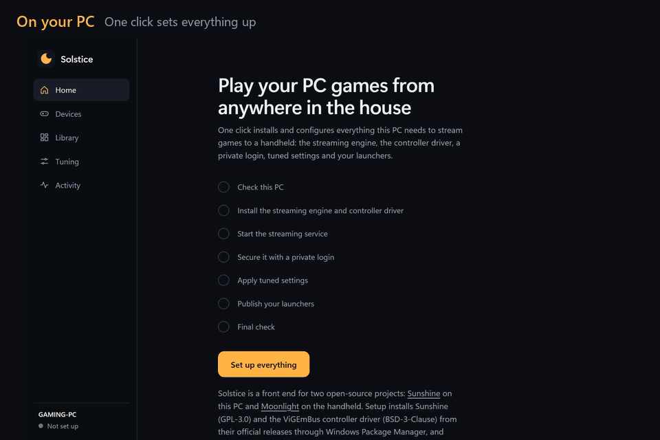
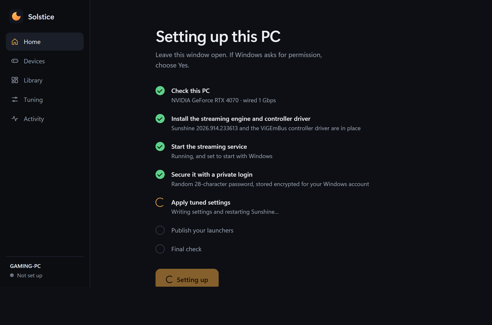
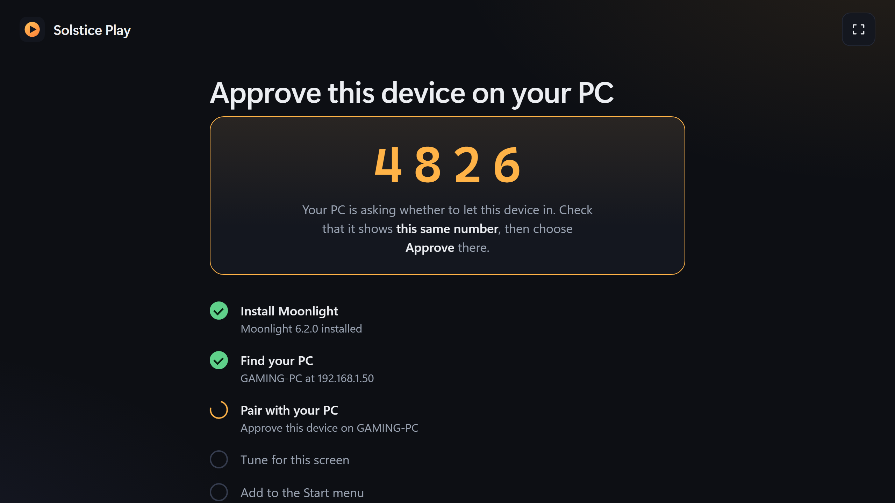
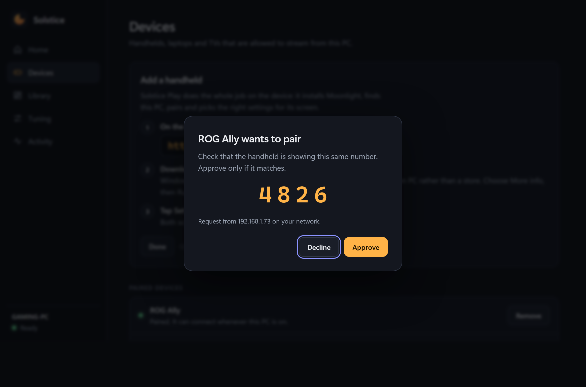
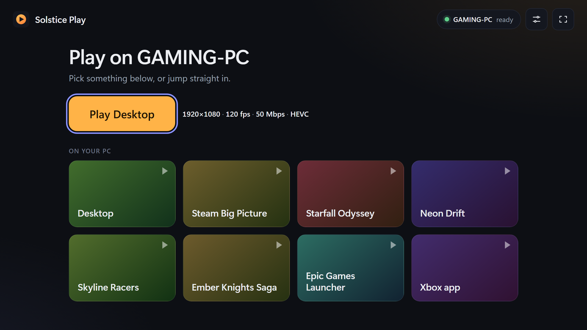
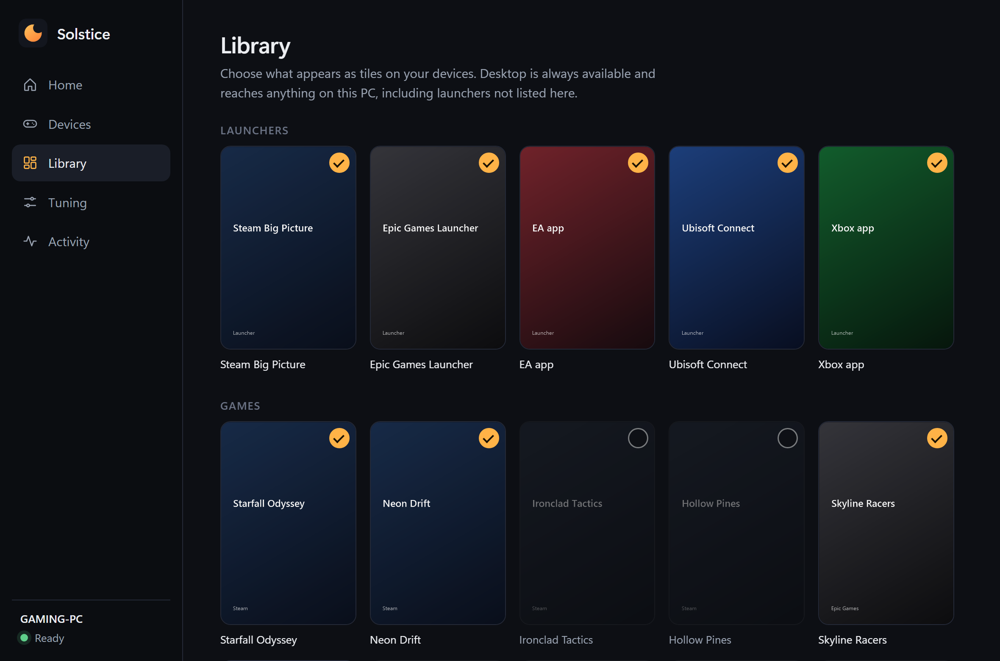

Solstice Play your PC games on your handheld.
One click sets up your Windows gaming PC for low-latency streaming. One tap on your ROG Ally finds it, pairs and plays. Sunshine and Moonlight, set up for you, for every launcher.

One click, one tap
No web admin page, no PINs to type, no config files.
Native & low-latency
Games render at the handheld's own resolution and refresh rate, encoded in hardware.
Every launcher
Steam, Epic, EA, Ubisoft, Xbox, GOG, Battle.net, Playnite, or the whole desktop.
Locked down
Private login, admin page kept on the PC, and nothing pairs without your approval.
On your PC
Everything the host needs, in one click.
Solstice installs Sunshine and the ViGEmBus controller driver from their official releases, behind a single Windows prompt, and doesn't call it done until the encoder and controller check out.
- Starts the service with Windows and opens the firewall for it.
- Private login: a random 28-character password, encrypted for your Windows account.
- Tuned settings and your launchers, published with box art.
- Health checks afterwards, each with a one-click fix.

Pairing
Same four digits on both screens. Approve.
The PC serves Solstice Play to your handheld over the home network. Run it, tap Set up, and the PC asks whether to let the device in, showing the same four digits as the handheld. No PIN to type, and nothing pairs without your click.
- Installs Moonlight on the handheld for you.
- Finds the PC without mDNS, so "Public" networks aren't a problem.
- TVs, phones and Steam Deck pair the classic way, with Moonlight's PIN.


On the handheld
Press Play. Even when the PC is asleep.
Solstice Play sizes the stream to the screen (1080p at 120 fps and 50 Mbps on a ROG Ally), wakes the PC with Wake-on-LAN if it's asleep, and launches straight into Desktop, Steam Big Picture or a game.
- Native resolution: the PC's monitor switches to the handheld's mode for the session, then back.
- Built for the controller: D-pad and A to navigate, Y for stream settings.
- Hold View to send the Guide button and open Steam's overlay.

Library
Every launcher, with box art.
Solstice finds Steam and your installed Steam games, Epic Games and installed Epic games, the EA app, Ubisoft Connect, the Xbox app, GOG Galaxy, Battle.net and Playnite. Tick what should show up on the handheld. Desktop is always there for everything else.

Set up in three steps
About two minutes, start to finish. Both devices on the same home network.
On the PC
- Download Solstice.zip and unzip it.
- Double-click Install Solstice.cmd.
- Click Set up everything, then Yes on the Windows prompt.
On the handheld
- On the PC, choose Devices › Add a device.
- On the handheld, open the address it shows in Edge and download Solstice Play.
- Run it and tap Set up.
Approve and play
- Check both screens show the same four digits.
- Click Approve on the PC.
- Press Play on the handheld. Hold Start + Select + L1 + R1 to leave a game.
The apps aren't code-signed, so Windows SmartScreen asks once: choose More info, then Run anyway. To build from source, see the README.
Questions
How do I stream PC games to my ROG Ally?
Install Solstice on the gaming PC and click Set up everything. Then choose Add a device, open the address it shows in Edge on the Ally, run Solstice Play and tap Set up. Approve the matching four digits on the PC. Under the hood it's Sunshine on the PC and Moonlight on the Ally, set up for you.
Is Sunshine and Moonlight better than Steam Remote Play?
For most people, yes: typically lower latency, higher image quality at the same bitrate, and it works with every launcher (Epic, EA, Ubisoft, Xbox Game Pass), not just Steam. Solstice removes the setup work that usually makes people stick with Steam Remote Play.
Do I need to install Sunshine or Moonlight myself?
No. Solstice installs Sunshine and the controller driver on the PC, and Solstice Play installs Moonlight on the handheld, from their official releases. If Sunshine is already installed, Solstice uses it.
Does it work with the Legion Go, MSI Claw or Steam Deck?
Solstice Play works on any Windows handheld or PC, including the Legion Go and MSI Claw. The Steam Deck runs Linux, so install Moonlight from Discover and pair with the PIN under Devices in Solstice.
Can the handheld wake my PC from sleep?
Yes, if Wake-on-LAN is on (Solstice checks and can turn it on) and the PC is asleep rather than fully shut down. Press Play and Solstice Play wakes it first.
Does it work outside my home?
Solstice sets up streaming inside your house. Playing over the internet needs port forwarding or a VPN such as Tailscale, which Sunshine and Moonlight support but Solstice doesn't configure yet.
Does Solstice change Sunshine or Moonlight?
No. It uses Sunshine's local API and settings and Moonlight's command line, and leaves both unmodified. Everything Solstice sets is visible in Sunshine's own settings page.
Get off the desk. Keep the frames.
Free, open source and built on the two best open-source game streaming projects.